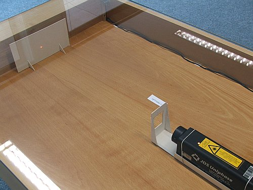

Difracção da luz
As experiências que usou Fresnel como argumento forte a favor da teoria ondulatória (fim do século XVIII e início do século XIX) foram, a interferência entre dois ráios de luz, quando a luz passa por dois orifícios, e a difração.
Quando duas ondas emitidas em dois pontos são sobrepostas, obtém-se um padrão de interferência: zonas fixas onde a onda resultante tem sempre um valor máximo ou mínimo. No caso da luz, esses padrões de interferência são observados como riscas claras e escuras.
A difração é a tendência que têm as ondas a se "dobrarem" contornando obstáculos. Nas áreas de contraste entre luz e sombra, numa imagem, aparecem padrões de interferência que são um sinal claro da difração da luz.
Esses dois fenómenos, interferência e difração, são próprios do movimento ondulatório e não acontecem no caso de feixes de partículas. Assim, a interferência e a difração da luz corroboram o seu caráter ondulatório.